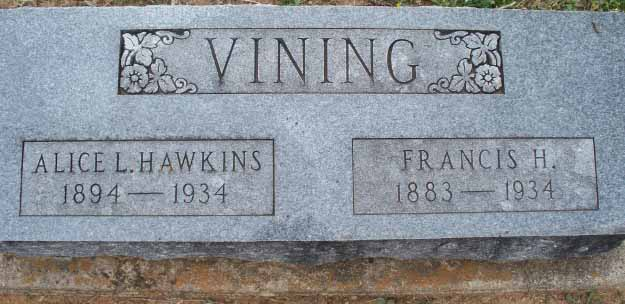

Census Data
| 1910 | 1920 | 1930 | 1940 | |
| Francis Henry Vining | 26 | 37 | 48 | dead |
| Alice [Lenora or Lenore?] (Hawkins) Vining | 16 | 27 | 39 | dead |
| Paul Edward Vining Jr. | 7 m. | 10 | 20 | ? |
| Oscar Francis Vining | 7 | 18 | ? | |
| Alfred Gilbert Vining | 6 | 16 | ? | |
| Sylvia Bell Vining | 4 y., 2 m. | 14 | ? | |
| Ralph Larry Vining | 2 y., 3 m. | 12 | ? | |
| Efton Howard Vining | 4 m. | 10 | ? | |
| Ray Dean Vining | 5 | ? | ||
| Melvin Dale Vining | 3 | ? | ||
| Lester Lloyd Vining | ? | |||
| Flossie Ann Vining | ? |


Death Data
Headstone for Francis Henry Vining and Alice Lenor[a or e?] (Hawkins) Vining, in Robbins Cemetery in Fawn Creek Township, Kansas: